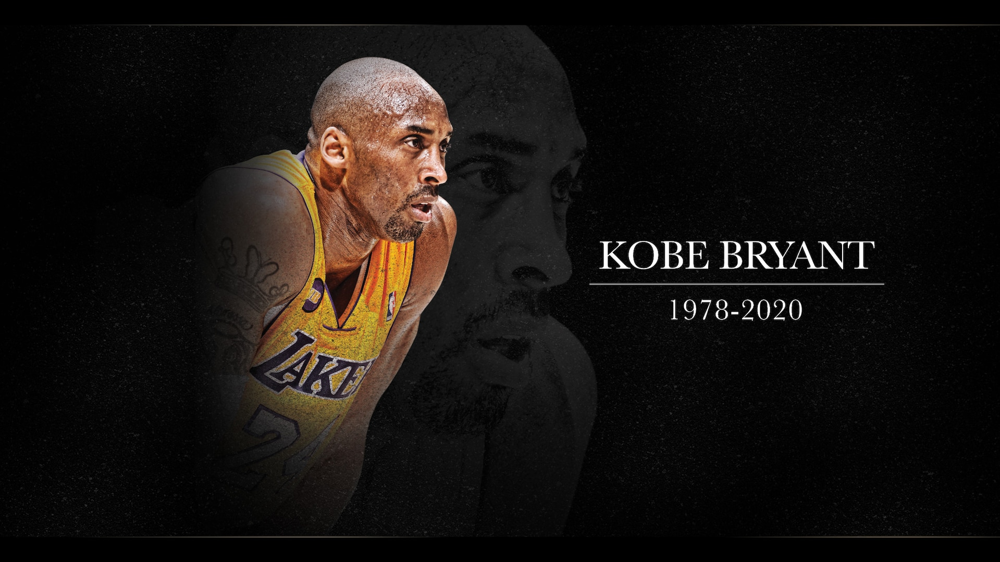

Kobe Bryant
The Black Mamba

A Basketball Legend
Evolving Legacy Of Kobe Bryant
- (1996) Kobe was the 13th pick in the NBA draft to the Charlotte Hornets straight out of Highschool. He was later traded to the LA Lakers. Since he was only 17, his parents had to co-sign his rookie contract.
- (1997) At the age of 18 Kobe participated in the NBA Rookie Challenge. That same year he won the All Star Slam Dunk Contest.
- (1999 - 2002) Phil Jackson became the head couch of the LAkers and coached Kobe to 3 straight NBA Championships.
- (2004) Kobe and teammate Shaq had a fallout and lost in the NBA Finals against the Detroit Pistons. This was also the same year the LAkers lost Phil Jackson as their Head Coach.
- (2005) Jackson returned as head coach and Kobe had a career high of 62 points in the first 3 quarters against the Dallas Mavericks.
- (2006) On Jan. 22, 2006, Bryant scored a career-high 81 points against the Toronto Raptors. It’s the second-highest points total in a single game in league history.
- (2008) Kobe joined the 2008 Olympic team in Beijing and won the gold metal against Spain.
- (2009 - 2010) Kobe went on the win the NBA Championship 2 more times.
- (2012) Kobe donned the red, white and blue for the final time in 2012. He won his final gold medal at the 2012 Summer Olympics in London.
- (2016) On April 13, 2016, Bryant played in his final NBA game. He scored a season-high 60 points in the Lakers’ 101-96 win over the Utah Jazz.
- (2017) On Dec. 18, 2017, the Lakers retired both of Kobe's jersey numbers. He’d worn No. 8 until 2006, when he changed to No. 24.
- (2018) Kobe created an animated short film, named after his poem, "Dear Basketball". “Dear Basketball” won the Oscar for Best Animated short Film at the 90th Academy Awards. The film also took home a Sports Emmy and the Annie Award that year.
If you want read more about the Legend himself, visit the NBA's tribute site.